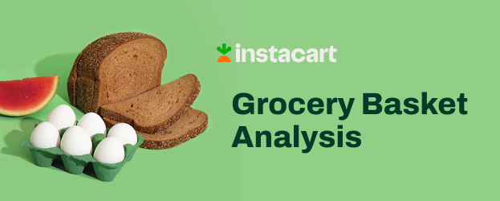

Introduction#

Project Objective#
Objective
Instacart is an online grocery store that operates through an app. Instacart already has very good sales, but they want to uncover more information about their sales patterns. The project obejctive is to perform an initial data and exploratory analysis of some of their data to derive insights and suggest strategies for better segmentation based on the provided criteria.
Stakeholders#
The Instacart stakeholders are most interested in the variety of customers in their database along with their purchasing behaviors. They assume they can’t target everyone using the same methods, and they’re considering a targeted marketing strategy. They want to target different customers with applicable marketing campaigns to see whether they have an effect on the sale of their products.
Vice President of Marketing
“We’re always looking into improving our targeting for ad campaigns.”
Senior Vice President of Sales
”We need to know what part of our offering has the lowest market share and why. Based on this input, we could improve this sector and boost sales.”
Instacart Customer
“I want to receive ads, promotions, and recommendations that are relevant to the products I order regularly.”
Key questions#
Time
The sales team needs to know what the busiest days of the week and hours of the day are (i.e., the days and times with the most orders) in order to schedule ads at times when there are fewer orders.
They also want to know whether there are particular times of the day when people spend the most money, as this might inform the type of products they advertise at these times.
Products
Are there certain types of products that are more popular than others?
The marketing and sales teams want to know which departments have the highest frequency of product orders.
Pricing
Instacart has a lot of products with different price tags. Marketing and sales want to use simpler price range groupings to help direct their efforts.